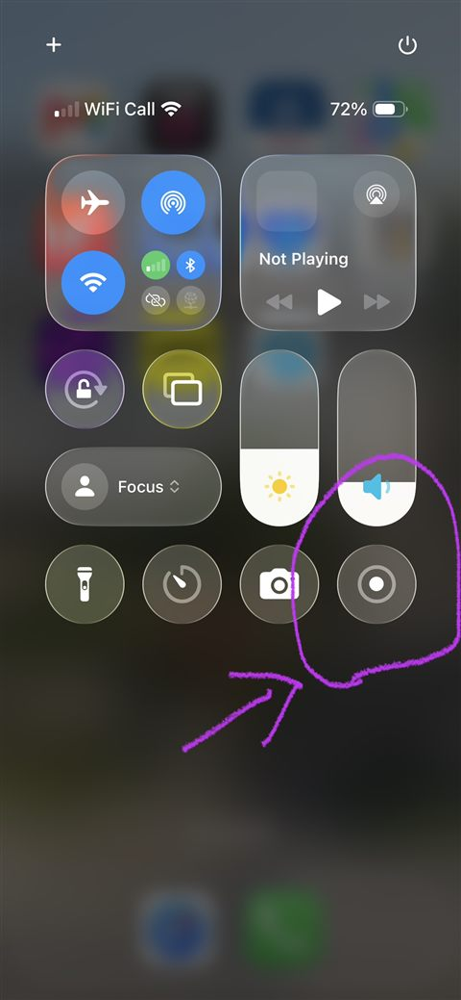
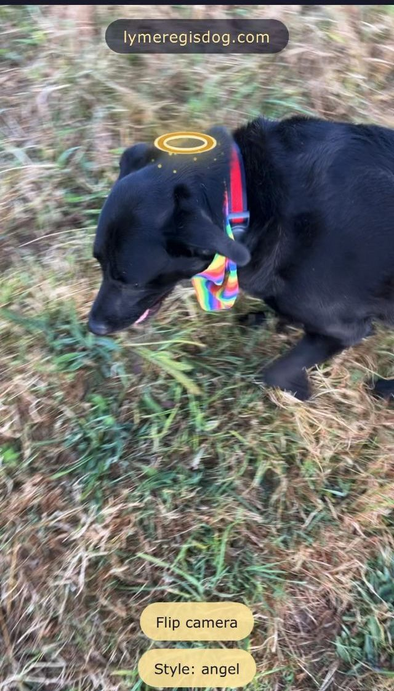

Angel Dogs puts a golden halo above your dog, live, through your phone's camera. There is nothing to install — it runs on the web page itself. The page never records anything and no pictures ever leave your phone.
These instructions are written for iPhone, but Android phones work in almost exactly the same way.
😇 Open Angel DogsPart one: letting the camera work
Open the Angel Dogs page in Safari on your phone.
Tap the big Start the angel dogs button.
A little message will pop up asking whether the website may use your camera. Tap Allow. That message is just your phone being careful, which is a good thing — the page only uses the camera to look for dogs, and it never records or saves anything.
Point your camera at a dog. The very first time, the page takes a few seconds to load its dog-spotting magic — then the halo appears.
If the camera says no
If you tapped Don't Allow by mistake, your phone remembers and the page can't see anything. It's easy to fix.
Open your iPhone's Settings app.
Scroll down and tap Apps, then Safari. (On older iPhones, Safari is straight in the main Settings list.)
Tap Camera and choose Ask or Allow.
Go back to the Angel Dogs page and reload it. This time, it will ask nicely again.
Part two: recording a video to keep
The Angel Dogs page never records anything itself. To keep a video of your angel, you ask your iPhone to record its own screen while the halo is showing. Your phone can already do this — here is how.
Put your finger at the very top right corner of your screen and swipe down. This opens the Control Centre.
Find the record button — a circle with a dot inside it, circled in purple in the picture below. Tap it once. Your phone counts down 3, 2, 1 and starts recording, and the clock in the top corner turns red.

The Control Centre. The record button is the circle with the dot inside, shown here circled in purple.
Swipe back up to leave the Control Centre, open the Angel Dogs page, and let your dog be an angel.
When you're done, tap the red clock at the top of the screen and tap Stop. Your video is saved in your Photos, ready to share with everyone you know.

Oak of Lyme Regis, filmed exactly this way at six o'clock one summer morning. She woke the photographer at half past three, so the halo is generous.
😇 Open Angel Dogs